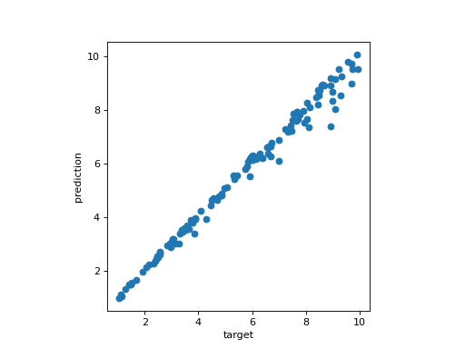

Čech complex persistence scikit-learn like interface#
|
|
|
Čech complex persistence scikit-learn like interface example#
In this example, we build a dataset X composed of 500 circles of radius randomly between 1.0 and 10.0. N points are subsampled randomly on each circle, where N randomly between 100 and 300 for each circle. In order to complicate things, some noise (+/- 5% of the radius value) to the point coordinates.
The TDA scikit-learn pipeline is constructed and is composed of:
CechPersistencethat computes the persistence of the Čech complex (through some Delaunay equivalent) from the inputs and returns its persistence diagrams in dimension 1.PersistenceLengthsthat returns here the biggest persistence bar in dimension 1.LinearRegression an ordinary least squares Linear Regression from scikit-learn.
The model is trained with the squared radiuses of each circles and 75% of the dataset, and you can appreciate the regression line of the model when fitting on the other 25% of the dataset.
# Standard data science imports
import numpy as np
from sklearn.pipeline import Pipeline
import matplotlib.pyplot as plt
from sklearn.linear_model import LinearRegression
from sklearn.model_selection import train_test_split
# Import TDA pipeline requirements
from gudhi.sklearn import CechPersistence
from gudhi.representations.vector_methods import PersistenceLengths
# To build the dataset
from gudhi.datasets.generators import points
no_plot = False
# Build the dataset
dataset_size = 500
# Noise is expressed in percentage of radius - set it to 0. for no noise
noise = 0.1
# target is a list of 1000 random circle radiuses (between 1. and 10.)
target = 1. + 9. * np.random.rand(dataset_size,1)
# use also a random number of points (between 100 and 300)
nb_points = np.random.randint(100,high=300, size=dataset_size)
X = []
for idx in range(dataset_size):
radius = target[idx, 0]
pts = points.sphere(nb_points[idx], 2, radius=radius)
ns = noise * radius * np.random.rand(nb_points[idx], 2) - (noise / 2.)
X.append(pts + ns)
# Split the dataset for train/predict
Xtrain, Xtest, ytrain, ytest = train_test_split(X, target, test_size = 0.25)
pipe = Pipeline(
[
("cech_pers", CechPersistence(homology_dimensions=1, n_jobs=-2)),
("max_pers", PersistenceLengths(num_lengths=1)),
("regression", LinearRegression()),
]
)
model = pipe.fit(Xtrain, ytrain)
# Let's see how our model is predicting radiuses from points on random circles
predictions = model.predict(Xtest)
_, ax = plt.subplots()
ax.set_xlabel('target')
ax.set_ylabel('prediction')
ax.scatter(ytest, predictions)
ax.set_aspect("equal")
if no_plot == False:
plt.show()
(Source code, png, hires.png, pdf)
{kind=link}
{kind=link}

Regression line of the model#
Čech complex persistence scikit-learn like interface reference#
- class gudhi.sklearn.CechPersistence[source]#
Bases:
BaseEstimator,TransformerMixinThis is a class for computing the same persistent homology as the Čech complex, while being significantly smaller, using internally a
DelaunayCechComplex.- __init__(homology_dimensions, precision='safe', output_squared_values=False, threshold=inf, homology_coeff_field=11, n_jobs=None)[source]#
Constructor for the CechPersistence class.
- Parameters:
homology_dimensions¶ (
int|Iterable[int]) – The returned persistence diagrams dimension(s). Short circuit the use ofDimensionSelectorwhen only one dimension matters (in other words, when homology_dimensions is an int).precision¶ (
Literal['fast','safe','exact']) – Complex precision can be ‘fast’, ‘safe’ or ‘exact’. Default is ‘safe’.output_squared_values¶ (
bool) – Square filtration values when True. Default is False (contrary to its default value inDelaunayCechComplex).threshold¶ (
float) – The maximum filtration value the simplices shall not exceed. Default is set to infinity, and there is very little point using anything else since it does not save time. Notice that the filtration values (equal to radii, by default, or squared radii) will be different in function of output_squared_values value (when False, by default, or True).homology_coeff_field¶ (
int) – The homology coefficient field. Must be a prime number. Default value is 11.n_jobs¶ (
int|None) – Number of jobs to run in parallel. None (default value) means n_jobs = 1 unless in a joblib.parallel_backend context. -1 means using all processors. cf. https://joblib.readthedocs.io/en/latest/generated/joblib.Parallel.html for more details.
- transform(X, Y=None)[source]#
Compute all the Čech complexes and their associated persistence diagrams.
- Parameters:
X¶ (list of list of float OR list of numpy.ndarray) – list of point clouds as Euclidean coordinates.
- Returns:
Persistence diagrams in the format:
If homology_dimensions was set to n: [array( Hn(X[0]) ), array( Hn(X[1]) ), …]
If homology_dimensions was set to [i, j]: [[array( Hi(X[0]) ), array( Hj(X[0]) )], [array( Hi(X[1]) ), array( Hj(X[1]) )], …]
- Return type:
list of numpy ndarray of shape (,2) or list of list of numpy ndarray of shape (,2)
- class gudhi.sklearn.WeightedCechPersistence[source]#
Bases:
BaseEstimator,TransformerMixinThis is a class for computing the same persistent homology as the Weighted Čech complex, while being significantly smaller, using internally a Weighted version of
AlphaComplex.- __init__(homology_dimensions, precision='safe', output_squared_values=True, threshold=inf, homology_coeff_field=11, n_jobs=None)[source]#
Constructor for the WeightedCechPersistence class.
- Parameters:
homology_dimensions¶ (
int|Iterable[int]) – The returned persistence diagrams dimension(s). Short circuit the use ofDimensionSelectorwhen only one dimension matters (in other words, when homology_dimensions is an int).precision¶ (
Literal['fast','safe','exact']) – Complex precision can be ‘fast’, ‘safe’ or ‘exact’. Default is ‘safe’.output_squared_values¶ (
bool) – Square filtration values when True. Default is True (contrary to the unweighted versionCechPersistence).threshold¶ (
float) – The maximum filtration value the simplices shall not exceed. Default is set to infinity, and there is very little point using anything else since it does not save time. Notice that the filtration values (equal to squared radii, by default, or radii) will be different in function of output_squared_values value (when True, by default, or False).homology_coeff_field¶ (
int) – The homology coefficient field. Must be a prime number. Default value is 11.n_jobs¶ (
int|None) – Number of jobs to run in parallel. None (default value) means n_jobs = 1 unless in a joblib.parallel_backend context. -1 means using all processors. cf. https://joblib.readthedocs.io/en/latest/generated/joblib.Parallel.html for more details.
- fit(X, Y=None)[source]#
Fit the WeightedCechPersistence class in function of homology_dimensions type.
- transform(X, Y=None)[source]#
Compute all the Weighted Čech complexes and their associated persistence diagrams.
- Parameters:
X¶ (list of list of float OR list of numpy.ndarray) – list of point clouds as Euclidean coordinates, plus the weight (as the last column value).
- Returns:
Persistence diagrams in the format:
If homology_dimensions was set to n: [array( Hn(X[0]) ), array( Hn(X[1]) ), …]
If homology_dimensions was set to [i, j]: [[array( Hi(X[0]) ), array( Hj(X[0]) )], [array( Hi(X[1]) ), array( Hj(X[1]) )], …]
- Return type:
list of numpy ndarray of shape (,2) or list of list of numpy ndarray of shape (,2)